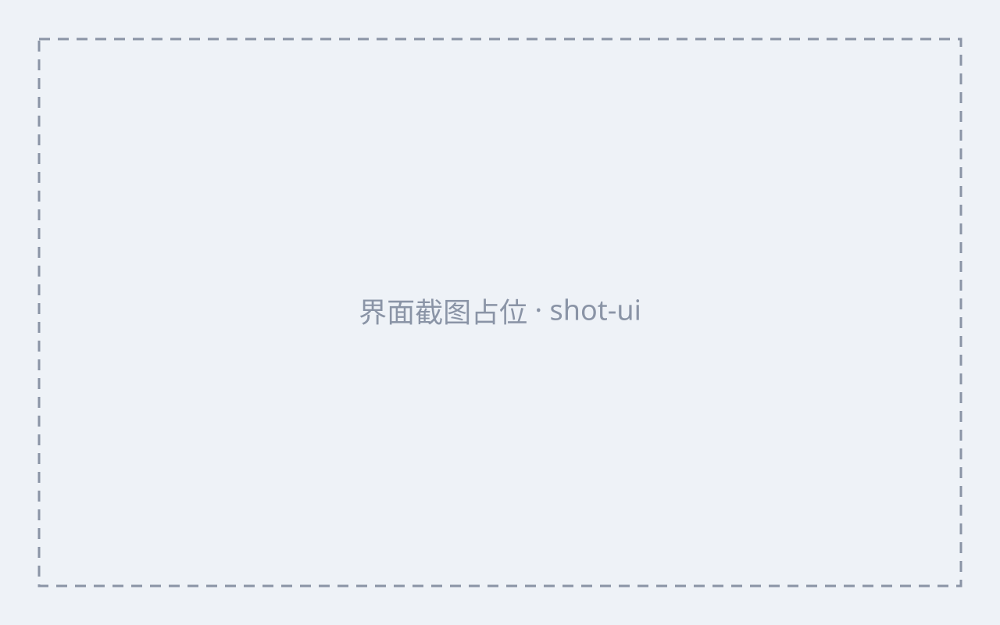
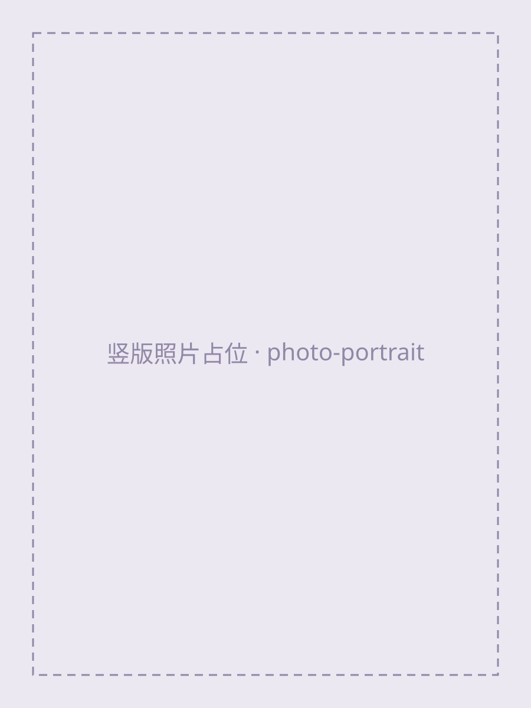

Ken Burns 缓慢推拉 + 径向渐变 + 中灰叠加。无须真实图片，也能做出高级感。
满幅图：加压字与 scrim＝hero，不加＝full-bleed
Figure · 01

图 1 · 新版工作台。左侧是任务流，右侧是实时指标 —— 截图、图表、架构图都用这个版式。
.img-frame.contain：不裁剪，整张图完整可见。截图 / 示意图 / 图表一律用这个，不要用 cover。满幅图：加压字与 scrim＝hero，不加＝full-bleed

ProductProduct · 03
cover.split 加 flip--img-ratio 控制，这里用 4/5 竖构图；图片换成横图也不会破版。满幅图：加压字与 scrim＝hero，不加＝full-bleed